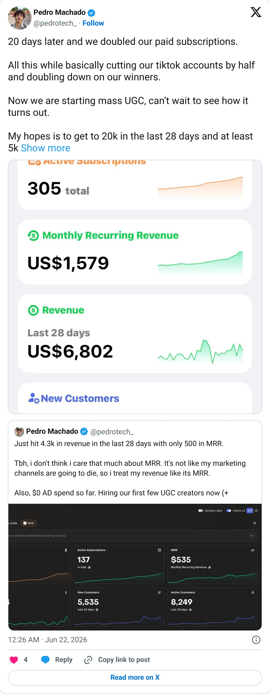
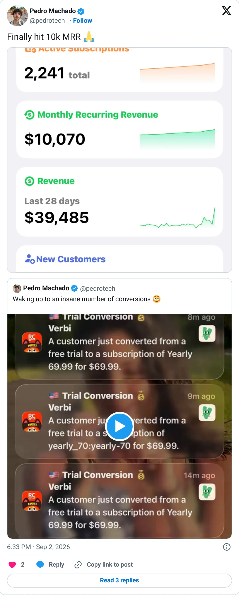

Not a pick
Verbi
The ledger looks real. It is not one of the clearer things to start next.
$20.4K MRR
Should you build this
The money looks real, and it is still not a recommendation to start a copy. Verbi is listed at $20.4K MRR, taken from TrustMRR on 2026-10-08. 5 recorded months sit under the headline, and they are processor totals. This is current billing on a connected Stripe, Paddle, Polar, or Dodo account. It does not certify margins, churn, or that every tweet around it is careful.
Cited from the captured posts, shown below: the earliest captured post (Jun 22, 2026) is the source for “Founder: paid subscribers doubled in 20 days”; the latest milestone (Sep 2, 2026) is the source for “Founder: "Finally hit 10k MRR"”.
Posts this is based on

Founder: paid subscribers doubled in 20 days
Open on X

Founder: "Finally hit 10k MRR"
Open on X
What the product is
AI language tutor app built around speaking practice: real conversations with an AI tutor, vocabulary and progress tracking. Launched Apr 2026 in Canada. TrustMRR (RevenueCat) shows 4,421 subscriptions and $72.3K over the last 30 days.
Public trail
- $3.2KVerified revenue in May 2026 (first month tracked) source
- •Founder: paid subscribers doubled in 20 days source
- $9.6KVerified revenue in Jun 2026 source
- $54KVerified revenue in Jul 2026 source
- $36.8KVerified revenue in Aug 2026 source
- •Founder: "Finally hit 10k MRR" source
- $127.9KVerified revenue in Sep 2026 (latest full month) source